ADS1298 clamshell validation
Things to look at
- ✕ FAIL A — 500 SPS: median 0.672 µVrms, 1.19× expected (worst 14.65×); noisiest CH1 at 8.3 µVrms
- ✕ FAIL E — 2000 SPS: max |r| = 0.31, channel-average ratio 0.93 (1 = independent, 2.83 = fully shared)
- ✕ FAIL E — 4000 SPS: max |r| = 0.27, channel-average ratio 0.933 (1 = independent, 2.83 = fully shared)
- ✕ FAIL E — 500 SPS: max |r| = 0.37, channel-average ratio 0.909 (1 = independent, 2.83 = fully shared)
- ✕ FAIL G — median amplitude 1.8792 mV vs 2.000 mV expected (-6.0 %)
- ✕ FAIL H — WiFi off: (AVDD+AVSS)/2 = 1.260 V, DVDD/4 = 0.711 V, ripple ≈ 40.6 µVrms
- ✕ FAIL H — WiFi scanning (TX): (AVDD+AVSS)/2 = 1.260 V, DVDD/4 = 0.711 V, ripple ≈ 84.1 µVrms
- ✕ FAIL P — 1 of 114 captures in this run failed integrity checks.
- ! WARN B — Other spectral lines on 9 channel spectra; check them against Experiments D (alias?) and F (aggressor?).
- ! WARN D — RMS grows with rate^0.35 (white noise = 0.50).
- ! WARN D — Some lines appear at one data rate only: likely aliases of interference above Nyquist (the sinc³ filter rejects only partially between its nulls).
- ! WARN F — 2000 SPS, WiFi access point (beacons): noise +48.9 %, pp/rms 13, new lines 49 Hz, 58 Hz, 68 Hz, 78 Hz, 88 Hz
- ! WARN F — 2000 SPS, WiFi scanning (continuous TX): noise +5.6 %, pp/rms 15, new lines 849 Hz
- ! WARN F — 4000 SPS, WiFi access point (beacons): noise +23.3 %, pp/rms 12, new lines 58 Hz, 68 Hz, 78 Hz, 88 Hz, 98 Hz
- ! WARN F — 4000 SPS, WiFi scanning (continuous TX): noise +4.6 %, pp/rms 14, new lines 1417 Hz
- ! WARN F — 500 SPS, WiFi access point (beacons): noise +35.5 %, pp/rms 11, new lines 39 Hz, 49 Hz, 58 Hz, 68 Hz, 78 Hz
- ! WARN G — Gain cross-check: amplitude spread across gains 1.058× (1.00 ideal); log-log slope vs gain +0.02
- ! WARN G — Noise on DC test levels exceeds shorted noise in 6 cases: reference noise.
- ! WARN I — temperature -9.24 → -9.16 °C over 119 s (range -9.24–-9.15 °C)
P · Prerequisites & data integrity
✕ FAILProve the data path is trustworthy before measuring noise: device ID, register readback, exact frame and DRDY counts, valid status words, no interleaved zeros, correct sample rate.
All channels on the internal test signal (far from zero, so a stuck or zeroed sample is obvious). One capture per data rate, then repeated PWDN power cycles with a fresh configuration each time.
- ✓ PASSID register = 0x92 (expected 0x92)
- ✕ FAIL1 of 114 captures in this run failed integrity checks.
Integrity of the prerequisite captures
| Capture | Frames | Missed | Bad status | Zero frames | Rate (SPS) | Rate error | Readback OK | Verdict |
|---|---|---|---|---|---|---|---|---|
| 500 SPS · all 8 · test signal | 5000/5000 | 0 | 0 | 0 | 502.713 | 0.54 % | yes | ✓ PASS |
| 2000 SPS · all 8 · test signal | 20000/20000 | 0 | 0 | 0 | 2014.96 | 0.75 % | yes | ✓ PASS |
| 4000 SPS · all 8 · test signal | 40000/40000 | 0 | 0 | 0 | 4029.84 | 0.75 % | yes | ✓ PASS |
| power cycle 1 · 500 SPS | 1000/1000 | 0 | 0 | 0 | 503.788 | 0.76 % | yes | ✓ PASS |
| power cycle 2 · 500 SPS | 1000/1000 | 0 | 0 | 0 | 503.752 | 0.75 % | yes | ✓ PASS |
| power cycle 3 · 500 SPS | 1000/1000 | 0 | 0 | 0 | 503.776 | 0.76 % | yes | ✓ PASS |
Integrity of every capture in this run (114 rows)
| Exp | Capture | Frames | Missed | Bad status | Rate error | Problems | Verdict |
|---|---|---|---|---|---|---|---|
| P | 500 SPS · all 8 · test signal | 5000/5000 | 0 | 0 | 0.54 % | — | ✓ PASS |
| P | 2000 SPS · all 8 · test signal | 20000/20000 | 0 | 0 | 0.75 % | — | ✓ PASS |
| P | 4000 SPS · all 8 · test signal | 40000/40000 | 0 | 0 | 0.75 % | — | ✓ PASS |
| P | power cycle 1 · 500 SPS | 1000/1000 | 0 | 0 | 0.76 % | — | ✓ PASS |
| P | power cycle 2 · 500 SPS | 1000/1000 | 0 | 0 | 0.75 % | — | ✓ PASS |
| P | power cycle 3 · 500 SPS | 1000/1000 | 0 | 0 | 0.76 % | — | ✓ PASS |
| A | 500 SPS · CH1 · G6 · shorted | 5000/5000 | 0 | 0 | 0.48 % | — | ✓ PASS |
| A | 500 SPS · CH2 · G6 · shorted | 5000/5000 | 0 | 0 | 0.48 % | — | ✓ PASS |
| A | 500 SPS · CH3 · G6 · shorted | 5000/5000 | 0 | 0 | 0.48 % | — | ✓ PASS |
| A | 500 SPS · CH4 · G6 · shorted | 5000/5000 | 0 | 0 | 0.48 % | — | ✓ PASS |
| A | 500 SPS · CH5 · G6 · shorted | 5000/5000 | 0 | 0 | 0.48 % | — | ✓ PASS |
| A | 500 SPS · CH6 · G6 · shorted | 5000/5000 | 0 | 0 | 0.48 % | — | ✓ PASS |
| A | 500 SPS · CH7 · G6 · shorted | 5000/5000 | 0 | 0 | 0.48 % | — | ✓ PASS |
| A | 500 SPS · CH8 · G6 · shorted | 5000/5000 | 0 | 0 | 0.48 % | — | ✓ PASS |
| A | 500 SPS · all 8 · G6 · shorted | 5000/5000 | 0 | 0 | 0.71 % | — | ✓ PASS |
| A | 2000 SPS · CH1 · G6 · shorted | 20000/20000 | 0 | 0 | 0.48 % | — | ✓ PASS |
| A | 2000 SPS · CH2 · G6 · shorted | 20000/20000 | 0 | 0 | 0.48 % | — | ✓ PASS |
| A | 2000 SPS · CH3 · G6 · shorted | 20000/20000 | 0 | 0 | 0.48 % | — | ✓ PASS |
| A | 2000 SPS · CH4 · G6 · shorted | 20000/20000 | 0 | 0 | 0.48 % | — | ✓ PASS |
| A | 2000 SPS · CH5 · G6 · shorted | 20000/20000 | 0 | 0 | 0.48 % | — | ✓ PASS |
| A | 2000 SPS · CH6 · G6 · shorted | 20000/20000 | 0 | 0 | 0.48 % | — | ✓ PASS |
| A | 2000 SPS · CH7 · G6 · shorted | 20000/20000 | 0 | 0 | 0.48 % | — | ✓ PASS |
| A | 2000 SPS · CH8 · G6 · shorted | 20000/20000 | 0 | 0 | 0.48 % | — | ✓ PASS |
| A | 2000 SPS · all 8 · G6 · shorted | 20000/20000 | 0 | 0 | 0.71 % | — | ✓ PASS |
| A | 4000 SPS · CH1 · G6 · shorted | 40000/40000 | 0 | 0 | 0.49 % | — | ✓ PASS |
| A | 4000 SPS · CH2 · G6 · shorted | 40000/40000 | 0 | 0 | 0.49 % | — | ✓ PASS |
| A | 4000 SPS · CH3 · G6 · shorted | 40000/40000 | 0 | 0 | 0.49 % | — | ✓ PASS |
| A | 4000 SPS · CH4 · G6 · shorted | 40000/40000 | 0 | 0 | 0.49 % | — | ✓ PASS |
| A | 4000 SPS · CH5 · G6 · shorted | 40000/40000 | 0 | 0 | 0.49 % | — | ✓ PASS |
| A | 4000 SPS · CH6 · G6 · shorted | 40000/40000 | 0 | 0 | 0.49 % | — | ✓ PASS |
| A | 4000 SPS · CH7 · G6 · shorted | 40000/40000 | 0 | 0 | 0.49 % | — | ✓ PASS |
| A | 4000 SPS · CH8 · G6 · shorted | 40000/40000 | 0 | 0 | 0.49 % | — | ✓ PASS |
| A | 4000 SPS · all 8 · G6 · shorted | 40000/40000 | 0 | 0 | 0.71 % | — | ✓ PASS |
| C | 500 SPS · all 8 · G1 · shorted | 5000/5000 | 0 | 0 | 0.69 % | — | ✓ PASS |
| C | 500 SPS · all 8 · G2 · shorted | 5000/5000 | 0 | 0 | 0.69 % | — | ✓ PASS |
| C | 500 SPS · all 8 · G3 · shorted | 5000/5000 | 0 | 0 | 0.68 % | — | ✓ PASS |
| C | 500 SPS · all 8 · G4 · shorted | 5000/5000 | 0 | 0 | 0.68 % | — | ✓ PASS |
| C | 500 SPS · all 8 · G6 · shorted | 5000/5000 | 0 | 0 | 0.68 % | — | ✓ PASS |
| C | 500 SPS · all 8 · G8 · shorted | 5000/5000 | 0 | 0 | 0.68 % | — | ✓ PASS |
| C | 500 SPS · all 8 · G12 · shorted | 5000/5000 | 0 | 0 | 0.68 % | — | ✓ PASS |
| C | 2000 SPS · all 8 · G1 · shorted | 20000/20000 | 0 | 0 | 0.68 % | — | ✓ PASS |
| C | 2000 SPS · all 8 · G2 · shorted | 20000/20000 | 0 | 0 | 0.68 % | — | ✓ PASS |
| C | 2000 SPS · all 8 · G3 · shorted | 20000/20000 | 0 | 0 | 0.68 % | — | ✓ PASS |
| C | 2000 SPS · all 8 · G4 · shorted | 20000/20000 | 0 | 0 | 0.68 % | — | ✓ PASS |
| C | 2000 SPS · all 8 · G6 · shorted | 20000/20000 | 0 | 0 | 0.68 % | — | ✓ PASS |
| C | 2000 SPS · all 8 · G8 · shorted | 20000/20000 | 0 | 0 | 0.67 % | — | ✓ PASS |
| C | 2000 SPS · all 8 · G12 · shorted | 20000/20000 | 0 | 0 | 0.67 % | — | ✓ PASS |
| C | 4000 SPS · all 8 · G1 · shorted | 40000/40000 | 0 | 0 | 0.67 % | — | ✓ PASS |
| C | 4000 SPS · all 8 · G2 · shorted | 40000/40000 | 0 | 0 | 0.67 % | — | ✓ PASS |
| C | 4000 SPS · all 8 · G3 · shorted | 40000/40000 | 0 | 0 | 0.67 % | — | ✓ PASS |
| C | 4000 SPS · all 8 · G4 · shorted | 40000/40000 | 0 | 0 | 0.67 % | — | ✓ PASS |
| C | 4000 SPS · all 8 · G6 · shorted | 40000/40000 | 0 | 0 | 0.66 % | — | ✓ PASS |
| C | 4000 SPS · all 8 · G8 · shorted | 40000/40000 | 0 | 0 | 0.66 % | — | ✓ PASS |
| C | 4000 SPS · all 8 · G12 · shorted | 40000/40000 | 0 | 0 | 0.66 % | — | ✓ PASS |
| F | 500 SPS · baseline (WiFi off, idle, 4 MHz, streaming) | 5000/5000 | 0 | 0 | 0.67 % | — | ✓ PASS |
| F | 500 SPS · SPI 500 kHz | 5000/5000 | 0 | 0 | 0.67 % | — | ✓ PASS |
| F | 500 SPS · SPI 8 MHz | 5000/5000 | 0 | 0 | 0.67 % | — | ✓ PASS |
| F | 500 SPS · CPU busy | 5000/5000 | 0 | 0 | 0.67 % | — | ✓ PASS |
| F | 500 SPS · WiFi access point (beacons) | 5000/5000 | 0 | 0 | 0.67 % | — | ✓ PASS |
| F | 500 SPS · WiFi scanning (continuous TX) | 5000/5000 | 0 | 0 | 0.67 % | — | ✓ PASS |
| F | 500 SPS · USB quiet (buffered in RAM) | 500/500 | 0 | 0 | 0.67 % | — | ✓ PASS |
| F | 2000 SPS · baseline (WiFi off, idle, 4 MHz, streaming) | 20000/20000 | 0 | 0 | 0.67 % | — | ✓ PASS |
| F | 2000 SPS · SPI 8 MHz | 20000/20000 | 0 | 0 | 0.67 % | — | ✓ PASS |
| F | 2000 SPS · CPU busy | 20000/20000 | 0 | 0 | 0.67 % | — | ✓ PASS |
| F | 2000 SPS · WiFi access point (beacons) | 20000/20000 | 0 | 0 | 0.67 % | — | ✓ PASS |
| F | 2000 SPS · WiFi scanning (continuous TX) | 20000/20000 | 0 | 0 | 0.67 % | — | ✓ PASS |
| F | 2000 SPS · USB quiet (buffered in RAM) | 2000/2000 | 0 | 0 | 0.67 % | — | ✓ PASS |
| F | 4000 SPS · baseline (WiFi off, idle, 4 MHz, streaming) | 40000/40000 | 0 | 0 | 0.67 % | — | ✓ PASS |
| F | 4000 SPS · SPI 8 MHz | 40000/40000 | 0 | 0 | 0.67 % | — | ✓ PASS |
| F | 4000 SPS · CPU busy | 40000/40000 | 0 | 0 | 0.67 % | — | ✓ PASS |
| F | 4000 SPS · WiFi access point (beacons) | 40000/40000 | 0 | 0 | 0.67 % | — | ✓ PASS |
| F | 4000 SPS · WiFi scanning (continuous TX) | 40000/40000 | 2 | 0 | 0.67 % | 2 conversions missed (SPI/UART could not keep up) | ✕ FAIL |
| F | 4000 SPS · USB quiet (buffered in RAM) | 4000/4000 | 0 | 0 | 0.67 % | — | ✓ PASS |
| G | 500 SPS · CH1 · G6 · test 2 Hz | 5370/5370 | 0 | 0 | 0.46 % | — | ✓ PASS |
| G | 500 SPS · CH2 · G6 · test 2 Hz | 5370/5370 | 0 | 0 | 0.46 % | — | ✓ PASS |
| G | 500 SPS · CH3 · G6 · test 2 Hz | 5370/5370 | 0 | 0 | 0.46 % | — | ✓ PASS |
| G | 500 SPS · CH4 · G6 · test 2 Hz | 5370/5370 | 0 | 0 | 0.46 % | — | ✓ PASS |
| G | 500 SPS · CH5 · G6 · test 2 Hz | 5370/5370 | 0 | 0 | 0.46 % | — | ✓ PASS |
| G | 500 SPS · CH6 · G6 · test 2 Hz | 5370/5370 | 0 | 0 | 0.46 % | — | ✓ PASS |
| G | 500 SPS · CH7 · G6 · test 2 Hz | 5370/5370 | 0 | 0 | 0.47 % | — | ✓ PASS |
| G | 500 SPS · CH8 · G6 · test 2 Hz | 5370/5370 | 0 | 0 | 0.47 % | — | ✓ PASS |
| G | 500 SPS · all 8 · G6 · test 2 Hz | 5370/5370 | 0 | 0 | 0.69 % | — | ✓ PASS |
| G | 2000 SPS · CH1 · G6 · test 2 Hz | 21480/21480 | 0 | 0 | 0.46 % | — | ✓ PASS |
| G | 2000 SPS · CH2 · G6 · test 2 Hz | 21480/21480 | 0 | 0 | 0.47 % | — | ✓ PASS |
| G | 2000 SPS · CH3 · G6 · test 2 Hz | 21480/21480 | 0 | 0 | 0.48 % | — | ✓ PASS |
| G | 2000 SPS · CH4 · G6 · test 2 Hz | 21480/21480 | 0 | 0 | 0.48 % | — | ✓ PASS |
| G | 2000 SPS · CH5 · G6 · test 2 Hz | 21480/21480 | 0 | 0 | 0.48 % | — | ✓ PASS |
| G | 2000 SPS · CH6 · G6 · test 2 Hz | 21480/21480 | 0 | 0 | 0.48 % | — | ✓ PASS |
| G | 2000 SPS · CH7 · G6 · test 2 Hz | 21480/21480 | 0 | 0 | 0.48 % | — | ✓ PASS |
| G | 2000 SPS · CH8 · G6 · test 2 Hz | 21480/21480 | 0 | 0 | 0.48 % | — | ✓ PASS |
| G | 2000 SPS · all 8 · G6 · test 2 Hz | 21480/21480 | 0 | 0 | 0.69 % | — | ✓ PASS |
| G | 4000 SPS · CH1 · G6 · test 2 Hz | 42960/42960 | 0 | 0 | 0.47 % | — | ✓ PASS |
| G | 4000 SPS · CH2 · G6 · test 2 Hz | 42960/42960 | 0 | 0 | 0.47 % | — | ✓ PASS |
| G | 4000 SPS · CH3 · G6 · test 2 Hz | 42960/42960 | 0 | 0 | 0.47 % | — | ✓ PASS |
| G | 4000 SPS · CH4 · G6 · test 2 Hz | 42960/42960 | 0 | 0 | 0.47 % | — | ✓ PASS |
| G | 4000 SPS · CH5 · G6 · test 2 Hz | 42960/42960 | 0 | 0 | 0.47 % | — | ✓ PASS |
| G | 4000 SPS · CH6 · G6 · test 2 Hz | 42960/42960 | 0 | 0 | 0.47 % | — | ✓ PASS |
| G | 4000 SPS · CH7 · G6 · test 2 Hz | 42960/42960 | 0 | 0 | 0.47 % | — | ✓ PASS |
| G | 4000 SPS · CH8 · G6 · test 2 Hz | 42960/42960 | 0 | 0 | 0.47 % | — | ✓ PASS |
| G | 4000 SPS · all 8 · G6 · test 2 Hz | 42960/42960 | 0 | 0 | 0.69 % | — | ✓ PASS |
| G | 500 SPS · all · G1 · test 2 Hz | 5370/5370 | 0 | 0 | 0.68 % | — | ✓ PASS |
| G | 500 SPS · all · G2 · test 2 Hz | 5370/5370 | 0 | 0 | 0.68 % | — | ✓ PASS |
| G | 500 SPS · all · G4 · test 2 Hz | 5370/5370 | 0 | 0 | 0.68 % | — | ✓ PASS |
| G | 500 SPS · all · G6 · test 2 Hz | 5370/5370 | 0 | 0 | 0.68 % | — | ✓ PASS |
| G | 500 SPS · all · G12 · test 2 Hz | 5370/5370 | 0 | 0 | 0.67 % | — | ✓ PASS |
| G | 500 SPS · all · G6 · DC amp0 | 5000/5000 | 0 | 0 | 0.67 % | — | ✓ PASS |
| G | 500 SPS · all · G6 · DC amp1 | 5000/5000 | 0 | 0 | 0.68 % | — | ✓ PASS |
| G | 2000 SPS · all · G6 · DC amp0 | 20000/20000 | 0 | 0 | 0.69 % | — | ✓ PASS |
| G | 2000 SPS · all · G6 · DC amp1 | 20000/20000 | 0 | 0 | 0.69 % | — | ✓ PASS |
| G | 4000 SPS · all · G6 · DC amp0 | 40000/40000 | 0 | 0 | 0.69 % | — | ✓ PASS |
| G | 4000 SPS · all · G6 · DC amp1 | 40000/40000 | 0 | 0 | 0.68 % | — | ✓ PASS |
| H | 500 SPS · MVDD · WiFi off | 5000/5000 | 0 | 0 | 0.68 % | — | ✓ PASS |
| H | 500 SPS · MVDD · WiFi scanning (TX) | 5000/5000 | 0 | 0 | 0.67 % | — | ✓ PASS |
| I | 500 SPS · CH1 temperature + shorted · 120 s | 60000/60000 | 0 | 0 | 0.68 % | — | ✓ PASS |
A capture that fails here is still analysed, but its numbers are suspect.
A · Shorted-input noise floor
✕ FAILMeasure the intrinsic noise of the ADS1298 as mounted on your board, with the inputs shorted inside the chip. Every other experiment is compared against this baseline.
CHnSET MUX = 001 (input shorted), internal 2.4 V reference, HR mode. Input-referred µVrms, µVpp, pp/rms and offset per channel, compared with the datasheet noise level.
- ✕ FAIL500 SPS: median 0.672 µVrms, 1.19× expected (worst 14.65×); noisiest CH1 at 8.3 µVrms
- ✓ PASS2000 SPS: median 1.01 µVrms, 0.89× expected (worst 1.24×)
- ✓ PASS4000 SPS: median 1.4 µVrms, 0.87× expected (worst 1.18×)
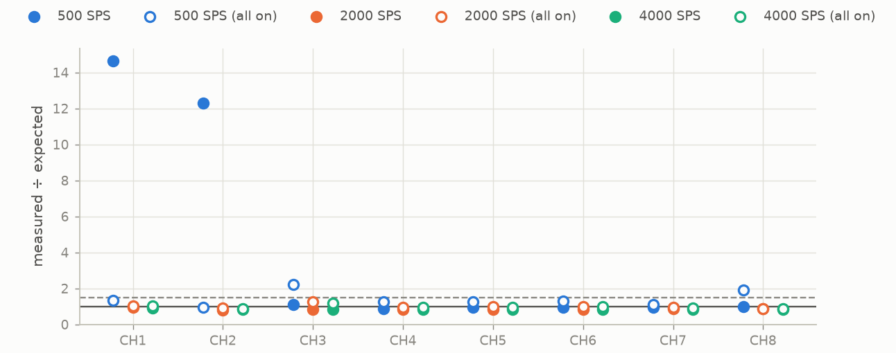
Noise per channel (input-referred) (48 rows)
| Rate | Plan | Ch | Offset (µV) | Noise (µVrms) | Noise (µVpp) | pp/rms | Expected (µVrms) | Measured ÷ expected | Verdict |
|---|---|---|---|---|---|---|---|---|---|
| 500 | each | 1 | -225 | 8.3 | 31.4 | 3.8 | 0.566 | 15 | ✕ FAIL |
| 500 | each | 2 | -105 | 6.96 | 27 | 3.9 | 0.566 | 12 | ✕ FAIL |
| 500 | each | 3 | -145 | 0.63 | 4.77 | 7.6 | 0.566 | 1.1 | ✓ PASS |
| 500 | each | 4 | 12 | 0.499 | 3.34 | 6.7 | 0.566 | 0.88 | ✓ PASS |
| 500 | each | 5 | 68.7 | 0.527 | 3.96 | 7.5 | 0.566 | 0.93 | ✓ PASS |
| 500 | each | 6 | 77.1 | 0.528 | 4.53 | 8.6 | 0.566 | 0.93 | ✓ PASS |
| 500 | each | 7 | -101 | 0.546 | 3.81 | 7 | 0.566 | 0.96 | ✓ PASS |
| 500 | each | 8 | -343 | 0.549 | 4.05 | 7.4 | 0.566 | 0.97 | ✓ PASS |
| 500 | all | 1 | -104 | 0.759 | 6.34 | 8.4 | 0.566 | 1.3 | ✓ PASS |
| 500 | all | 2 | -118 | 0.545 | 4.15 | 7.6 | 0.566 | 0.96 | ✓ PASS |
| 500 | all | 3 | -264 | 1.25 | 8.15 | 6.5 | 0.566 | 2.2 | ! WARN |
| 500 | all | 4 | 23.4 | 0.715 | 4.86 | 6.8 | 0.566 | 1.3 | ✓ PASS |
| 500 | all | 5 | -14.3 | 0.718 | 5.25 | 7.3 | 0.566 | 1.3 | ✓ PASS |
| 500 | all | 6 | 169 | 0.74 | 5.29 | 7.1 | 0.566 | 1.3 | ✓ PASS |
| 500 | all | 7 | -112 | 0.618 | 4.53 | 7.3 | 0.566 | 1.1 | ✓ PASS |
| 500 | all | 8 | -364 | 1.09 | 6.2 | 5.7 | 0.566 | 1.9 | ! WARN |
| 2000 | each | 1 | -194 | 1.06 | 10.3 | 9.7 | 1.13 | 0.93 | ✓ PASS |
| 2000 | each | 2 | -117 | 0.921 | 7.06 | 7.7 | 1.13 | 0.81 | ✓ PASS |
| 2000 | each | 3 | -145 | 0.927 | 7.25 | 7.8 | 1.13 | 0.82 | ✓ PASS |
| 2000 | each | 4 | 11.7 | 0.952 | 7.87 | 8.3 | 1.13 | 0.84 | ✓ PASS |
| 2000 | each | 5 | 69.4 | 0.939 | 7.06 | 7.5 | 1.13 | 0.83 | ✓ PASS |
| 2000 | each | 6 | 76.8 | 0.958 | 8.3 | 8.7 | 1.13 | 0.85 | ✓ PASS |
| 2000 | each | 7 | -101 | 0.984 | 8.25 | 8.4 | 1.13 | 0.87 | ✓ PASS |
| 2000 | each | 8 | -345 | 0.97 | 7.72 | 8 | 1.13 | 0.86 | ✓ PASS |
| 2000 | all | 1 | -101 | 1.16 | 9.63 | 8.3 | 1.13 | 1 | ✓ PASS |
| 2000 | all | 2 | -114 | 1.02 | 8.25 | 8.1 | 1.13 | 0.9 | ✓ PASS |
| 2000 | all | 3 | -263 | 1.4 | 10.4 | 7.4 | 1.13 | 1.2 | ✓ PASS |
| 2000 | all | 4 | 21.2 | 1.09 | 8.87 | 8.1 | 1.13 | 0.96 | ✓ PASS |
| 2000 | all | 5 | -17.3 | 1.12 | 8.15 | 7.3 | 1.13 | 0.99 | ✓ PASS |
| 2000 | all | 6 | 173 | 1.12 | 8.73 | 7.8 | 1.13 | 0.99 | ✓ PASS |
| 2000 | all | 7 | -112 | 1.05 | 9.16 | 8.7 | 1.13 | 0.93 | ✓ PASS |
| 2000 | all | 8 | -368 | 1 | 7.53 | 7.5 | 1.13 | 0.88 | ✓ PASS |
| 4000 | each | 1 | -195 | 1.49 | 15.8 | 11 | 1.6 | 0.93 | ✓ PASS |
| 4000 | each | 2 | -118 | 1.33 | 12.2 | 9.1 | 1.6 | 0.83 | ✓ PASS |
| 4000 | each | 3 | -145 | 1.35 | 11.3 | 8.4 | 1.6 | 0.84 | ✓ PASS |
| 4000 | each | 4 | 12.1 | 1.34 | 10.7 | 8 | 1.6 | 0.84 | ✓ PASS |
| 4000 | each | 5 | 70.1 | 1.35 | 12.5 | 9.3 | 1.6 | 0.85 | ✓ PASS |
| 4000 | each | 6 | 76 | 1.36 | 12.5 | 9.2 | 1.6 | 0.85 | ✓ PASS |
| 4000 | each | 7 | -101 | 1.35 | 12.3 | 9.1 | 1.6 | 0.84 | ✓ PASS |
| 4000 | each | 8 | -345 | 1.33 | 10.9 | 8.2 | 1.6 | 0.83 | ✓ PASS |
| 4000 | all | 1 | -103 | 1.67 | 14.6 | 8.8 | 1.6 | 1 | ✓ PASS |
| 4000 | all | 2 | -116 | 1.41 | 12 | 8.5 | 1.6 | 0.88 | ✓ PASS |
| 4000 | all | 3 | -262 | 1.9 | 15.2 | 8 | 1.6 | 1.2 | ✓ PASS |
| 4000 | all | 4 | 21.2 | 1.49 | 12.6 | 8.5 | 1.6 | 0.93 | ✓ PASS |
| 4000 | all | 5 | -16.2 | 1.53 | 15.1 | 9.8 | 1.6 | 0.96 | ✓ PASS |
| 4000 | all | 6 | 172 | 1.56 | 13 | 8.3 | 1.6 | 0.97 | ✓ PASS |
| 4000 | all | 7 | -112 | 1.43 | 12 | 8.4 | 1.6 | 0.89 | ✓ PASS |
| 4000 | all | 8 | -368 | 1.38 | 11.8 | 8.5 | 1.6 | 0.86 | ✓ PASS |
Expected value: estimate from 4 uVpp @150 Hz headline. Thresholds: [A] warn_ratio / fail_ratio / pp_rms_margin in test_plan.toml. pp/rms is compared with what pure Gaussian noise gives for the same number of samples (≈6.4 at 1 500, ≈8.1 at 40 000).
Does turning all channels on change the noise?
| Rate | Ch | Alone (µVrms) | All on (µVrms) | All ÷ alone | Verdict |
|---|---|---|---|---|---|
| 500 | 1 | 8.3 | 0.759 | 0.0915 | ✕ FAIL |
| 500 | 2 | 6.96 | 0.545 | 0.0783 | ✕ FAIL |
| 500 | 3 | 0.63 | 1.25 | 1.98 | ✕ FAIL |
| 500 | 4 | 0.499 | 0.715 | 1.43 | ! WARN |
| 500 | 5 | 0.527 | 0.718 | 1.36 | ! WARN |
| 500 | 6 | 0.528 | 0.74 | 1.4 | ! WARN |
| 500 | 7 | 0.546 | 0.618 | 1.13 | ✓ PASS |
| 500 | 8 | 0.549 | 1.09 | 1.99 | ✕ FAIL |
| 2000 | 1 | 1.06 | 1.16 | 1.1 | ✓ PASS |
| 2000 | 2 | 0.921 | 1.02 | 1.11 | ✓ PASS |
| 2000 | 3 | 0.927 | 1.4 | 1.51 | ✕ FAIL |
| 2000 | 4 | 0.952 | 1.09 | 1.14 | ✓ PASS |
| 2000 | 5 | 0.939 | 1.12 | 1.19 | ✓ PASS |
| 2000 | 6 | 0.958 | 1.12 | 1.16 | ✓ PASS |
| 2000 | 7 | 0.984 | 1.05 | 1.07 | ✓ PASS |
| 2000 | 8 | 0.97 | 1 | 1.03 | ✓ PASS |
| 4000 | 1 | 1.49 | 1.67 | 1.12 | ✓ PASS |
| 4000 | 2 | 1.33 | 1.41 | 1.06 | ✓ PASS |
| 4000 | 3 | 1.35 | 1.9 | 1.4 | ! WARN |
| 4000 | 4 | 1.34 | 1.49 | 1.11 | ✓ PASS |
| 4000 | 5 | 1.35 | 1.53 | 1.13 | ✓ PASS |
| 4000 | 6 | 1.36 | 1.56 | 1.15 | ✓ PASS |
| 4000 | 7 | 1.35 | 1.43 | 1.06 | ✓ PASS |
| 4000 | 8 | 1.33 | 1.38 | 1.04 | ✓ PASS |
Should be ~1.0. More than 20 % different points to shared supply/reference loading.
B · Noise spectrum (PSD)
! WARNFind what KIND of noise is present: flat white floor, 1/f rise, mains lines, USB or ESP32 lines.
Welch PSD (Hann window, ≥ 8 averaged segments) of Experiment A's captures, shown as amplitude spectral density. Lines more than 10 dB above the local floor are listed with a likely cause.
- ! WARNOther spectral lines on 9 channel spectra; check them against Experiments D (alias?) and F (aggressor?).
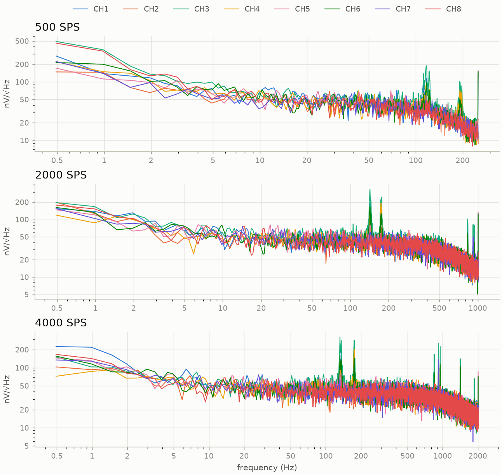
Spectrum summary
| Rate | Ch | White floor (nV/√Hz) | 1/f corner (Hz) | Spectral lines | Verdict |
|---|---|---|---|---|---|
| 500 | 1 | 43.6 | 20 | none | ✓ PASS |
| 500 | 2 | 36.9 | 7.9 | none | ✓ PASS |
| 500 | 3 | 48.7 | 6.4 | none | ✓ PASS |
| 500 | 4 | 40.4 | 6.9 | none | ✓ PASS |
| 500 | 5 | 42.9 | 13 | none | ✓ PASS |
| 500 | 6 | 40.9 | 14 | none | ✓ PASS |
| 500 | 7 | 38.6 | 4.9 | none | ✓ PASS |
| 500 | 8 | 38.7 | 20 | none | ✓ PASS |
| 2000 | 1 | 38.6 | 16 | 834.5 Hz (unknown, +11 dB); 142.6 Hz (unknown, +10 dB) | ! WARN |
| 2000 | 2 | 36.7 | 20 | none | ✓ PASS |
| 2000 | 3 | 42.5 | 12 | 142.6 Hz (unknown, +13 dB); 176.5 Hz (unknown, +11 dB); 175.1 Hz (unknown, +11 dB); 943.2 Hz (unknown, +10 dB) | ! WARN |
| 2000 | 4 | 37.4 | 13 | 174.1 Hz (unknown, +12 dB); 176.5 Hz (unknown, +11 dB) | ! WARN |
| 2000 | 5 | 38.4 | 14 | none | ✓ PASS |
| 2000 | 6 | 36.7 | 18 | 142.6 Hz (unknown, +10 dB) | ! WARN |
| 2000 | 7 | 36.8 | 14 | none | ✓ PASS |
| 2000 | 8 | 36.3 | 8.9 | none | ✓ PASS |
| 4000 | 1 | 38.4 | 8.4 | 954.0 Hz (unknown, +10 dB) | ! WARN |
| 4000 | 2 | 36.1 | 13 | none | ✓ PASS |
| 4000 | 3 | 40.5 | 20 | 954.0 Hz (unknown, +14 dB); 175.1 Hz (unknown, +13 dB); 132.3 Hz (unknown, +12 dB); 135.7 Hz (unknown, +11 dB) | ! WARN |
| 4000 | 4 | 36.9 | 17 | 175.1 Hz (unknown, +11 dB) | ! WARN |
| 4000 | 5 | 38.7 | 20 | 953.0 Hz (unknown, +10 dB) | ! WARN |
| 4000 | 6 | 36.8 | 15 | 954.0 Hz (unknown, +11 dB) | ! WARN |
| 4000 | 7 | 36.4 | 18 | none | ✓ PASS |
| 4000 | 8 | 35.3 | 18 | none | ✓ PASS |
Lines = local maxima ≥ 10 dB above a running-median floor. With the inputs shorted INSIDE the chip, any mains line must enter via the supply, ground or reference.
C · Gain sweep (PGA vs ADC noise)
✓ PASSFind which block dominates the noise. Input-referred noise should fall with gain and flatten out: the flat level is the PGA noise, the low-gain rise is ADC noise divided by the gain.
Shorted inputs at every gain; fit v_in² = e_PGA² + (e_ADC/G)² per channel.
- i INFO500 SPS: e_PGA ≈ 0.488 µVrms, e_ADC ≈ 2.48 µVrms; suggested gain G8
- i INFO2000 SPS: e_PGA ≈ 0.725 µVrms, e_ADC ≈ 5.02 µVrms; suggested gain G12
- i INFO4000 SPS: e_PGA ≈ 1.67 µVrms, e_ADC ≈ 6.95 µVrms; suggested gain G12
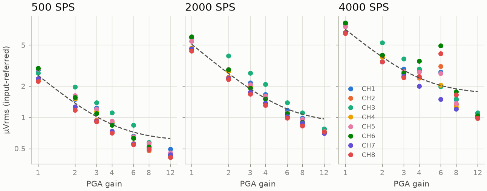
Input-referred noise (µVrms) vs gain, and model fit
| Rate | Ch | G1 | G2 | G3 | G4 | G6 | G8 | G12 | e_PGA (µV) | e_ADC (µV) | Suggested gain | LSB-noise spread | Verdict |
|---|---|---|---|---|---|---|---|---|---|---|---|---|---|
| 500 | 1 | 2.88 | 1.49 | 1.24 | 0.881 | 0.663 | 0.558 | 0.495 | 0.537 | 2.83 | G8 | 2.07 | ✓ PASS |
| 500 | 2 | 2.38 | 1.26 | 0.946 | 0.723 | 0.562 | 0.478 | 0.412 | 0.427 | 2.34 | G8 | 2.08 | ✓ PASS |
| 500 | 3 | 2.69 | 1.98 | 1.39 | 1.11 | 0.845 | 0.574 | 0.427 | 0.883 | 2.62 | G12 | 1.9 | ✓ PASS |
| 500 | 4 | 2.28 | 1.52 | 1.15 | 0.899 | 0.651 | 0.507 | 0.416 | 0.683 | 2.21 | G12 | 2.19 | ✓ PASS |
| 500 | 5 | 2.95 | 1.63 | 1.2 | 0.926 | 0.652 | 0.562 | 0.454 | 0.546 | 2.92 | G12 | 1.84 | ✓ PASS |
| 500 | 6 | 3 | 1.56 | 1.09 | 0.841 | 0.628 | 0.519 | 0.434 | 0.4 | 2.98 | G8 | 1.73 | ✓ PASS |
| 500 | 7 | 2.37 | 1.27 | 0.927 | 0.738 | 0.556 | 0.494 | 0.436 | 0.438 | 2.34 | G8 | 2.2 | ✓ PASS |
| 500 | 8 | 2.23 | 1.18 | 0.911 | 0.708 | 0.544 | 0.493 | 0.411 | 0.437 | 2.19 | G8 | 2.21 | ✓ PASS |
| 2000 | 1 | 5.98 | 2.91 | 2.17 | 1.67 | 1.18 | 0.985 | 0.775 | 0.626 | 5.93 | G12 | 1.6 | ✓ PASS |
| 2000 | 2 | 4.64 | 2.44 | 1.75 | 1.37 | 0.998 | 0.86 | 0.716 | 0.718 | 4.59 | G12 | 1.85 | ✓ PASS |
| 2000 | 3 | 5.86 | 3.94 | 2.69 | 2.1 | 1.39 | 1.11 | 0.777 | 1.52 | 5.77 | G12 | 1.59 | ✓ PASS |
| 2000 | 4 | 4.7 | 2.81 | 1.98 | 1.55 | 1.1 | 0.888 | 0.734 | 1.01 | 4.63 | G12 | 1.87 | ✓ PASS |
| 2000 | 5 | 5.45 | 2.92 | 2.07 | 1.61 | 1.11 | 0.967 | 0.731 | 0.823 | 5.41 | G12 | 1.61 | ✓ PASS |
| 2000 | 6 | 6.05 | 2.9 | 1.92 | 1.51 | 1.09 | 0.903 | 0.724 | 0 | 6.03 | G12 | 1.51 | ✓ PASS |
| 2000 | 7 | 4.63 | 2.39 | 1.75 | 1.37 | 1.02 | 0.889 | 0.704 | 0.711 | 4.58 | G12 | 1.82 | ✓ PASS |
| 2000 | 8 | 4.38 | 2.34 | 1.68 | 1.31 | 0.984 | 0.832 | 0.726 | 0.732 | 4.33 | G8 | 1.99 | ✓ PASS |
| 4000 | 1 | 7.97 | 4.02 | 2.94 | 2.88 | 2.76 | 1.48 | 1.09 | 1.62 | 7.79 | G12 | 2.08 | ✓ PASS |
| 4000 | 2 | 6.58 | 3.48 | 2.47 | 2.41 | 3.11 | 1.34 | 0.982 | 1.72 | 6.34 | G12 | 2.84 | ✓ PASS |
| 4000 | 3 | 8.21 | 5.26 | 3.69 | 2.93 | 1.99 | 1.51 | 1.11 | 2.02 | 8.08 | G12 | 1.62 | ✓ PASS |
| 4000 | 4 | 6.69 | 3.83 | 2.64 | 2.45 | 2.05 | 1.25 | 1.02 | 1.51 | 6.55 | G12 | 1.84 | ✓ PASS |
| 4000 | 5 | 7.52 | 4.01 | 2.79 | 2.75 | 2.66 | 1.37 | 1.02 | 1.62 | 7.35 | G12 | 2.12 | ✓ PASS |
| 4000 | 6 | 8.23 | 3.99 | 2.68 | 3.52 | 4.92 | 1.77 | 1.04 | 2.48 | 7.75 | G12 | 3.7 | ✓ PASS |
| 4000 | 7 | 6.58 | 3.44 | 2.5 | 2 | 1.49 | 1.21 | 0.987 | 1.05 | 6.5 | G12 | 1.8 | ✓ PASS |
| 4000 | 8 | 6.48 | 3.44 | 2.42 | 2.49 | 4.14 | 1.65 | 0.988 | 2.16 | 6.06 | G12 | 3.83 | ✓ PASS |
e_PGA: input-referred PGA noise (the high-gain floor). e_ADC: ADC + reference noise at the modulator input. Suggested gain: lowest gain within 20 % of the floor, which keeps the most headroom (±VREF/G) for electrode offset. LSB-noise spread ≈ 1 would mean noise after the PGA dominates.
D · Data-rate sweep
! WARNCheck that the noise behaves as white noise (RMS grows as √bandwidth, ×√2 per doubling) and separate real in-band lines (fixed frequency) from aliases (move when the rate changes).
Re-uses Experiment A's captures at every data rate.
- ! WARNRMS grows with rate^0.35 (white noise = 0.50).
- ! WARNSome lines appear at one data rate only: likely aliases of interference above Nyquist (the sinc³ filter rejects only partially between its nulls).
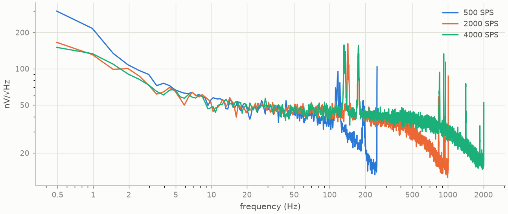
Noise vs data rate
| Ch | 500 SPS (µVrms) | 2000 SPS (µVrms) | 4000 SPS (µVrms) | Exponent (0.5 = white) | Floor spread (max÷min) | Verdict |
|---|---|---|---|---|---|---|
| 1 | 0.759 | 1.16 | 1.67 | 0.37 | 1.13 | ✓ PASS |
| 2 | 0.545 | 1.02 | 1.41 | 0.46 | 1.02 | ✓ PASS |
| 3 | 1.25 | 1.4 | 1.9 | 0.19 | 1.2 | ! WARN |
| 4 | 0.715 | 1.09 | 1.49 | 0.35 | 1.09 | ! WARN |
| 5 | 0.718 | 1.12 | 1.53 | 0.36 | 1.12 | ✓ PASS |
| 6 | 0.74 | 1.12 | 1.56 | 0.35 | 1.11 | ! WARN |
| 7 | 0.618 | 1.05 | 1.43 | 0.4 | 1.06 | ✓ PASS |
| 8 | 1.09 | 1 | 1.38 | 0.089 | 1.1 | ! WARN |
Exponent = slope of log(rms) vs log(rate). > 0.65: noise rises faster than white, interference at high frequency. Floor spread compares the µV/√Hz floors, which should overlap between rates.
Spectral lines across data rates
| Rate | Line (Hz) | Likely cause | Behaviour |
|---|---|---|---|
| 2000 | 142.6 | unknown | only at this rate → possible alias |
| 2000 | 174.1 | unknown | fixed → real in-band interference |
| 2000 | 175.1 | unknown | fixed → real in-band interference |
| 2000 | 176.5 | unknown | only at this rate → possible alias |
| 2000 | 834.5 | unknown | only at this rate → possible alias |
| 2000 | 943.2 | unknown | only at this rate → possible alias |
| 4000 | 132.3 | unknown | only at this rate → possible alias |
| 4000 | 135.7 | unknown | only at this rate → possible alias |
| 4000 | 175.1 | unknown | fixed → real in-band interference |
| 4000 | 953.0 | unknown | only at this rate → possible alias |
| 4000 | 954.0 | unknown | only at this rate → possible alias |
E · Multichannel correlation
✕ FAILSeparate noise that belongs to each channel from noise that all channels share (reference, supply, ground). Shared noise looks like a real synchronous signal and is the most dangerous kind for sEMG.
Experiment A's all-channel capture, high-pass filtered at 1 Hz: Pearson correlation matrix, RMS of the channel average vs σ/√N, and the mean coherence spectrum over all channel pairs.
- ✕ FAIL500 SPS: max |r| = 0.37, channel-average ratio 0.909 (1 = independent, 2.83 = fully shared)
- ✕ FAIL2000 SPS: max |r| = 0.31, channel-average ratio 0.93 (1 = independent, 2.83 = fully shared)
- ✕ FAIL4000 SPS: max |r| = 0.27, channel-average ratio 0.933 (1 = independent, 2.83 = fully shared)
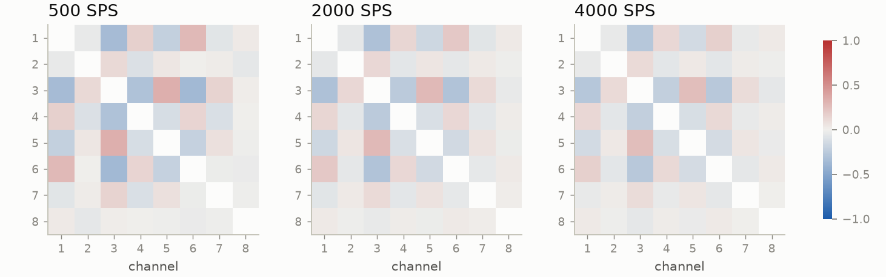
Correlation between channels
| Rate | Max |r| | RMS(avg) ÷ (σ/√N) | Fully shared would be | Coherence > 0.5 at (Hz) | Verdict |
|---|---|---|---|---|---|
| 500 | 0.37 | 0.909 | 2.83 | none | ✕ FAIL |
| 2000 | 0.31 | 0.93 | 2.83 | 141.6, 142.6, 835.0, 918.6, 919.6, 920.5 | ✕ FAIL |
| 4000 | 0.27 | 0.933 | 2.83 | 131.8, 135.7, 174.1, 175.1, 919.5, 920.5 | ✕ FAIL |
|r| < 0.05 (or 4/√samples for short captures): independent, the ideal case. RMS(avg) ÷ (σ/√N) ≈ 1 confirms independence; ≈ √N means the noise is shared. Data are high-pass filtered at highpass_hz first.
F · Aggressor toggling (ESP32, USB, SPI)
! WARNFind which system activity couples into the ADC by changing one thing at a time against a baseline.
All channels shorted; each variant changes one of SPI clock, CPU load, WiFi mode, or USB activity (buffering in RAM). The first variant is the baseline.
- ! WARN500 SPS, WiFi access point (beacons): noise +35.5 %, pp/rms 11, new lines 39 Hz, 49 Hz, 58 Hz, 68 Hz, 78 Hz
- ! WARN2000 SPS, WiFi access point (beacons): noise +48.9 %, pp/rms 13, new lines 49 Hz, 58 Hz, 68 Hz, 78 Hz, 88 Hz
- ! WARN2000 SPS, WiFi scanning (continuous TX): noise +5.6 %, pp/rms 15, new lines 849 Hz
- ! WARN4000 SPS, WiFi access point (beacons): noise +23.3 %, pp/rms 12, new lines 58 Hz, 68 Hz, 78 Hz, 88 Hz, 98 Hz
- ! WARN4000 SPS, WiFi scanning (continuous TX): noise +4.6 %, pp/rms 14, new lines 1417 Hz
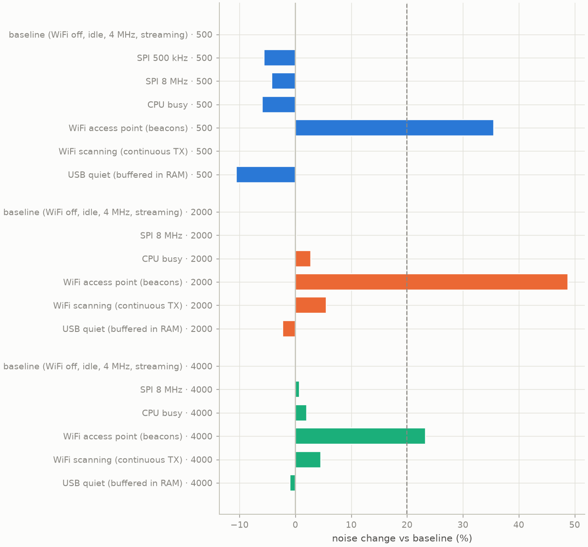
Noise under each aggressor
| Rate | Variant | Mean noise (µVrms) | Change vs baseline | Max pp/rms | New lines (CH1) | Missed frames | Verdict |
|---|---|---|---|---|---|---|---|
| 500 | baseline (WiFi off, idle, 4 MHz, streaming) | 0.704 | +0.0 % | 8.3 | none | 0 | ✓ PASS |
| 500 | SPI 500 kHz | 0.664 | -5.6 % | 7.9 | 145 Hz | 0 | ✓ PASS |
| 500 | SPI 8 MHz | 0.674 | -4.2 % | 8.2 | 170 Hz | 0 | ✓ PASS |
| 500 | CPU busy | 0.662 | -6.0 % | 7.8 | none | 0 | ✓ PASS |
| 500 | WiFi access point (beacons) | 0.954 | +35.5 % | 11 | 39 Hz, 49 Hz, 58 Hz, 68 Hz, 78 Hz | 0 | ! WARN |
| 500 | WiFi scanning (continuous TX) | 0.704 | -0.0 % | 9.2 | none | 0 | ✓ PASS |
| 500 | USB quiet (buffered in RAM) | 0.629 | -10.6 % | 6.5 | none | 0 | ✓ PASS |
| 2000 | baseline (WiFi off, idle, 4 MHz, streaming) | 1.13 | +0.0 % | 8.6 | none | 0 | ✓ PASS |
| 2000 | SPI 8 MHz | 1.13 | +0.2 % | 8.5 | none | 0 | ✓ PASS |
| 2000 | CPU busy | 1.16 | +2.8 % | 8.3 | 138 Hz, 168 Hz, 500 Hz | 0 | ✓ PASS |
| 2000 | WiFi access point (beacons) | 1.68 | +48.9 % | 13 | 49 Hz, 58 Hz, 68 Hz, 78 Hz, 88 Hz | 0 | ! WARN |
| 2000 | WiFi scanning (continuous TX) | 1.19 | +5.6 % | 15 | 849 Hz | 0 | ! WARN |
| 2000 | USB quiet (buffered in RAM) | 1.1 | -2.3 % | 7.5 | none | 0 | ✓ PASS |
| 4000 | baseline (WiFi off, idle, 4 MHz, streaming) | 1.55 | +0.0 % | 8.6 | none | 0 | ✓ PASS |
| 4000 | SPI 8 MHz | 1.56 | +0.8 % | 10 | none | 0 | ✓ PASS |
| 4000 | CPU busy | 1.58 | +2.1 % | 8.6 | 128 Hz, 500 Hz, 1416 Hz | 0 | ✓ PASS |
| 4000 | WiFi access point (beacons) | 1.91 | +23.3 % | 12 | 58 Hz, 68 Hz, 78 Hz, 88 Hz, 98 Hz | 0 | ! WARN |
| 4000 | WiFi scanning (continuous TX) | 1.62 | +4.6 % | 14 | 1417 Hz | 2 | ! WARN |
| 4000 | USB quiet (buffered in RAM) | 1.54 | -1.0 % | 8.8 | 849 Hz | 0 | ✓ PASS |
WARN above +20 %, FAIL above +50 % (test_plan.toml [F]). Variants whose SPI clock is too slow for the data rate are skipped.
G · Internal test signal
✕ FAILCheck gain, scaling, offset, timing and reference noise with the chip's own square wave. Also tests the known 'amplitude ≈ 1/6 of expected' problem with a gain cross-check.
MUX = 101 (test signal), INT_TEST = 1. Square wave: amplitude, midpoint, plateau noise, period. Gain cross-check: input-referred amplitude must not depend on gain. DC levels at both amplitudes: plateau noise vs shorted noise reveals reference noise.
- ✕ FAILmedian amplitude 1.8792 mV vs 2.000 mV expected (-6.0 %)
- ! WARNGain cross-check: amplitude spread across gains 1.058× (1.00 ideal); log-log slope vs gain +0.02
- ! WARNNoise on DC test levels exceeds shorted noise in 6 cases: reference noise.
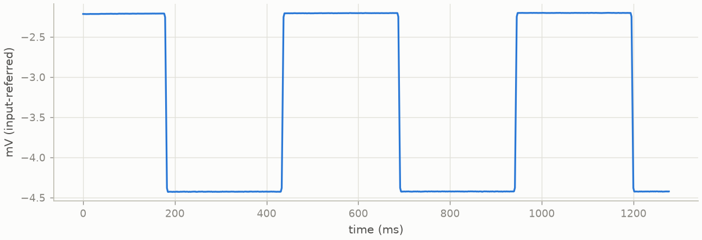
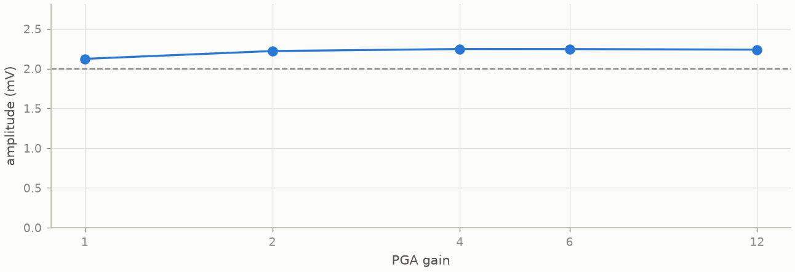
Square-wave measurements (48 rows)
| Rate | Plan | Ch | Amplitude (mV) | Expected (mV) | Error | Midpoint (µV) | Plateau noise (µVrms) | Period (ms) | Period jitter (samples) | Verdict |
|---|---|---|---|---|---|---|---|---|---|---|
| 500 | each | 1 | 1.5420 | 2.000 | -22.9 % | -1.61e+03 | 2.32 | 509.65 | 0.0014 | ✕ FAIL |
| 500 | each | 2 | 1.5282 | 2.000 | -23.6 % | -1.59e+03 | 0.617 | 509.64 | 0.00095 | ✕ FAIL |
| 500 | each | 3 | 1.5282 | 2.000 | -23.6 % | -1.63e+03 | 0.577 | 509.63 | 0.0012 | ✕ FAIL |
| 500 | each | 4 | 1.5287 | 2.000 | -23.6 % | -1.48e+03 | 0.554 | 509.63 | 0.00086 | ✕ FAIL |
| 500 | each | 5 | 1.5298 | 2.000 | -23.5 % | -1.4e+03 | 0.634 | 509.63 | 0.0012 | ✕ FAIL |
| 500 | each | 6 | 1.5258 | 2.000 | -23.7 % | -1.41e+03 | 0.635 | 509.63 | 0.00089 | ✕ FAIL |
| 500 | each | 7 | 1.5275 | 2.000 | -23.6 % | -1.59e+03 | 0.671 | 509.63 | 0.0011 | ✕ FAIL |
| 500 | each | 8 | 1.5262 | 2.000 | -23.7 % | -1.84e+03 | 0.576 | 509.63 | 0.0011 | ✕ FAIL |
| 500 | all | 1 | 2.2261 | 2.000 | +11.3 % | -3.31e+03 | 2.35 | 508.49 | 0.0013 | ! WARN |
| 500 | all | 2 | 2.2465 | 2.000 | +12.3 % | -3.32e+03 | 2.27 | 508.49 | 0.00093 | ! WARN |
| 500 | all | 3 | 2.2522 | 2.000 | +12.6 % | -3.4e+03 | 2.26 | 508.49 | 0.001 | ! WARN |
| 500 | all | 4 | 2.2517 | 2.000 | +12.6 % | -3.29e+03 | 2.41 | 508.49 | 0.00099 | ! WARN |
| 500 | all | 5 | 2.2423 | 2.000 | +12.1 % | -3.22e+03 | 2.14 | 508.49 | 0.00089 | ! WARN |
| 500 | all | 6 | 2.2480 | 2.000 | +12.4 % | -3.07e+03 | 2.18 | 508.49 | 0.00089 | ! WARN |
| 500 | all | 7 | 2.2612 | 2.000 | +13.1 % | -3.34e+03 | 2.32 | 508.49 | 0.00097 | ! WARN |
| 500 | all | 8 | 2.2465 | 2.000 | +12.3 % | -3.62e+03 | 2.14 | 508.49 | 0.00086 | ! WARN |
| 2000 | each | 1 | 1.5394 | 2.000 | -23.0 % | -1.62e+03 | 3.51 | 509.65 | 0.0017 | ✕ FAIL |
| 2000 | each | 2 | 1.5272 | 2.000 | -23.6 % | -1.6e+03 | 1.45 | 509.59 | 0.002 | ✕ FAIL |
| 2000 | each | 3 | 1.5272 | 2.000 | -23.6 % | -1.63e+03 | 1.03 | 509.56 | 0.0022 | ✕ FAIL |
| 2000 | each | 4 | 1.5276 | 2.000 | -23.6 % | -1.48e+03 | 1.09 | 509.55 | 0.0023 | ✕ FAIL |
| 2000 | each | 5 | 1.5287 | 2.000 | -23.6 % | -1.41e+03 | 1.08 | 509.56 | 0.0018 | ✕ FAIL |
| 2000 | each | 6 | 1.5249 | 2.000 | -23.8 % | -1.42e+03 | 1.08 | 509.56 | 0.0022 | ✕ FAIL |
| 2000 | each | 7 | 1.5264 | 2.000 | -23.7 % | -1.59e+03 | 1.04 | 509.55 | 0.0024 | ✕ FAIL |
| 2000 | each | 8 | 1.5253 | 2.000 | -23.7 % | -1.84e+03 | 1.03 | 509.55 | 0.002 | ✕ FAIL |
| 2000 | all | 1 | 2.2213 | 2.000 | +11.1 % | -3.31e+03 | 2.87 | 508.47 | 0.0025 | ! WARN |
| 2000 | all | 2 | 2.2417 | 2.000 | +12.1 % | -3.32e+03 | 2.6 | 508.47 | 0.002 | ! WARN |
| 2000 | all | 3 | 2.2474 | 2.000 | +12.4 % | -3.4e+03 | 2.7 | 508.47 | 0.002 | ! WARN |
| 2000 | all | 4 | 2.2468 | 2.000 | +12.3 % | -3.29e+03 | 2.78 | 508.47 | 0.0022 | ! WARN |
| 2000 | all | 5 | 2.2375 | 2.000 | +11.9 % | -3.22e+03 | 2.52 | 508.47 | 0.0021 | ! WARN |
| 2000 | all | 6 | 2.2432 | 2.000 | +12.2 % | -3.06e+03 | 2.49 | 508.47 | 0.0023 | ! WARN |
| 2000 | all | 7 | 2.2563 | 2.000 | +12.8 % | -3.33e+03 | 2.56 | 508.47 | 0.0021 | ! WARN |
| 2000 | all | 8 | 2.2418 | 2.000 | +12.1 % | -3.62e+03 | 2.52 | 508.47 | 0.002 | ! WARN |
| 4000 | each | 1 | 1.5371 | 2.000 | -23.1 % | -1.63e+03 | 3.7 | 509.63 | 0.0023 | ✕ FAIL |
| 4000 | each | 2 | 1.5260 | 2.000 | -23.7 % | -1.6e+03 | 2.21 | 509.63 | 0.0018 | ✕ FAIL |
| 4000 | each | 3 | 1.5261 | 2.000 | -23.7 % | -1.63e+03 | 1.55 | 509.62 | 0.0037 | ✕ FAIL |
| 4000 | each | 4 | 1.5264 | 2.000 | -23.7 % | -1.48e+03 | 1.58 | 509.61 | 0.0037 | ✕ FAIL |
| 4000 | each | 5 | 1.5277 | 2.000 | -23.6 % | -1.41e+03 | 1.65 | 509.62 | 0.0047 | ✕ FAIL |
| 4000 | each | 6 | 1.5241 | 2.000 | -23.8 % | -1.42e+03 | 1.54 | 509.61 | 0.0026 | ✕ FAIL |
| 4000 | each | 7 | 1.5254 | 2.000 | -23.7 % | -1.6e+03 | 1.53 | 509.61 | 0.0036 | ✕ FAIL |
| 4000 | each | 8 | 1.5242 | 2.000 | -23.8 % | -1.85e+03 | 1.49 | 509.60 | 0.0029 | ✕ FAIL |
| 4000 | all | 1 | 2.2164 | 2.000 | +10.8 % | -3.31e+03 | 3.23 | 508.47 | 0.0038 | ! WARN |
| 4000 | all | 2 | 2.2367 | 2.000 | +11.8 % | -3.32e+03 | 2.96 | 508.47 | 0.0028 | ! WARN |
| 4000 | all | 3 | 2.2422 | 2.000 | +12.1 % | -3.4e+03 | 3.12 | 508.47 | 0.0029 | ! WARN |
| 4000 | all | 4 | 2.2418 | 2.000 | +12.1 % | -3.29e+03 | 3.18 | 508.47 | 0.0032 | ! WARN |
| 4000 | all | 5 | 2.2326 | 2.000 | +11.6 % | -3.22e+03 | 2.87 | 508.47 | 0.003 | ! WARN |
| 4000 | all | 6 | 2.2383 | 2.000 | +11.9 % | -3.06e+03 | 2.85 | 508.47 | 0.0025 | ! WARN |
| 4000 | all | 7 | 2.2513 | 2.000 | +12.6 % | -3.33e+03 | 2.99 | 508.47 | 0.0026 | ! WARN |
| 4000 | all | 8 | 2.2368 | 2.000 | +11.8 % | -3.62e+03 | 2.89 | 508.47 | 0.0039 | ! WARN |
Expected period 512.0 ms (f_CLK/2²⁰). The test-signal amplitude is not a precision reference: treat a few % as normal (clamshell_validation.md, section 8).
Gain cross-check (input-referred amplitude must not depend on gain)
| Gain | Median amplitude (mV) |
|---|---|
| 1 | 2.1232 |
| 2 | 2.2214 |
| 4 | 2.2466 |
| 6 | 2.2461 |
| 12 | 2.2389 |
Reference noise: noise on a DC test level vs shorted noise
| Rate | TEST_AMP | Noise on DC level (µVrms) | Shorted noise (µVrms) | Excess (µVrms) | Verdict |
|---|---|---|---|---|---|
| 500 | 0 | 1.4 | 0.804 | 1.15 | ! WARN |
| 500 | 1 | 1.19 | 0.804 | 0.883 | ! WARN |
| 2000 | 0 | 1.97 | 1.12 | 1.62 | ! WARN |
| 2000 | 1 | 1.77 | 1.12 | 1.37 | ! WARN |
| 4000 | 0 | 2.7 | 1.55 | 2.21 | ! WARN |
| 4000 | 1 | 2.47 | 1.55 | 1.92 | ! WARN |
Reference noise scales with the signal and vanishes at 0 V, so it shows up only here. Growing with TEST_AMP = reference noise: improve VREFP decoupling.
H · Supply measurement (MVDD)
✕ FAILMeasure the ADS1298's own supply rails and their ripple using the chip itself.
MUX = 011 (MVDD), gain 1. Channels 1, 2, 5–8 measure (AVDD + AVSS)/2; channels 3 and 4 measure DVDD/4. Repeated under each listed variant (e.g. WiFi transmitting).
- ✕ FAILWiFi off: (AVDD+AVSS)/2 = 1.260 V, DVDD/4 = 0.711 V, ripple ≈ 40.6 µVrms
- ✕ FAILWiFi scanning (TX): (AVDD+AVSS)/2 = 1.260 V, DVDD/4 = 0.711 V, ripple ≈ 84.1 µVrms
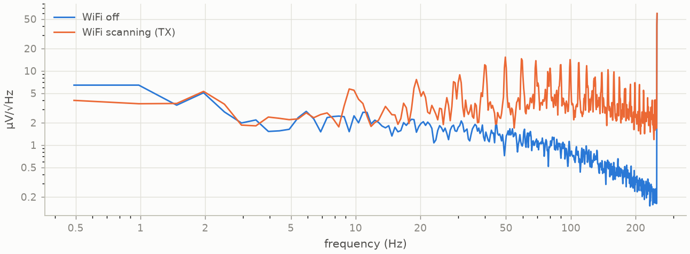
Supply rails
| Rate | Variant | Ch | Measures | Mean (V) | Expected (V) | Error | Ripple (µVrms) | Ripple lines | Verdict |
|---|---|---|---|---|---|---|---|---|---|
| 500 | WiFi off | 1 | (AVDD+AVSS)/2 | 1.4139 | 1.6500 | -14.31 % | 53.6 | none | ✕ FAIL |
| 500 | WiFi off | 2 | (AVDD+AVSS)/2 | 1.4050 | 1.6500 | -14.85 % | 81.1 | none | ✕ FAIL |
| 500 | WiFi off | 3 | DVDD/4 | 0.7089 | 0.8250 | -14.07 % | 19 | none | ✕ FAIL |
| 500 | WiFi off | 4 | DVDD/4 | 0.7130 | 0.8250 | -13.58 % | 16.5 | none | ✕ FAIL |
| 500 | WiFi off | 5 | (AVDD+AVSS)/2 | 1.4098 | 1.6500 | -14.55 % | 55.9 | none | ✕ FAIL |
| 500 | WiFi off | 6 | (AVDD+AVSS)/2 | 1.4106 | 1.6500 | -14.51 % | 53.4 | none | ✕ FAIL |
| 500 | WiFi off | 7 | (AVDD+AVSS)/2 | 0.9609 | 1.6500 | -41.76 % | 27.5 | none | ✕ FAIL |
| 500 | WiFi off | 8 | (AVDD+AVSS)/2 | 0.9604 | 1.6500 | -41.79 % | 27.8 | none | ✕ FAIL |
| 500 | WiFi scanning (TX) | 1 | (AVDD+AVSS)/2 | 1.4140 | 1.6500 | -14.31 % | 92.8 | 49.6 Hz, 99.3 Hz, 59.0 Hz | ✕ FAIL |
| 500 | WiFi scanning (TX) | 2 | (AVDD+AVSS)/2 | 1.4051 | 1.6500 | -14.84 % | 111 | 49.6 Hz, 59.0 Hz, 99.3 Hz | ✕ FAIL |
| 500 | WiFi scanning (TX) | 3 | DVDD/4 | 0.7090 | 0.8250 | -14.06 % | 46.1 | 49.6 Hz, 99.3 Hz, 59.5 Hz | ✕ FAIL |
| 500 | WiFi scanning (TX) | 4 | DVDD/4 | 0.7130 | 0.8250 | -13.57 % | 45.7 | 49.6 Hz, 99.3 Hz, 59.0 Hz | ✕ FAIL |
| 500 | WiFi scanning (TX) | 5 | (AVDD+AVSS)/2 | 1.4099 | 1.6500 | -14.55 % | 97.1 | 49.6 Hz, 99.3 Hz, 59.0 Hz | ✕ FAIL |
| 500 | WiFi scanning (TX) | 6 | (AVDD+AVSS)/2 | 1.4107 | 1.6500 | -14.50 % | 92.5 | 49.6 Hz, 99.3 Hz, 59.0 Hz | ✕ FAIL |
| 500 | WiFi scanning (TX) | 7 | (AVDD+AVSS)/2 | 0.9606 | 1.6500 | -41.78 % | 74.8 | 49.6 Hz, 59.5 Hz, 39.8 Hz | ✕ FAIL |
| 500 | WiFi scanning (TX) | 8 | (AVDD+AVSS)/2 | 0.9601 | 1.6500 | -41.81 % | 75.7 | 49.6 Hz, 59.5 Hz, 39.8 Hz | ✕ FAIL |
Expected values from avdd/avss/dvdd in test_plan.toml [H]. Lines that also appear in Experiment B point to the supply as the coupling path.
I · Temperature & long-term drift
! WARNSee how offset and noise change during warm-up and over minutes; find the longest useful averaging time.
One channel on the temperature sensor (MUX = 100, gain 1), the others shorted. Offset per second vs temperature, and the Allan deviation of each shorted channel.
- ! WARNtemperature -9.24 → -9.16 °C over 119 s (range -9.24–-9.15 °C)
- i INFOlongest useful averaging time ≈ 5.8 s (median over channels)
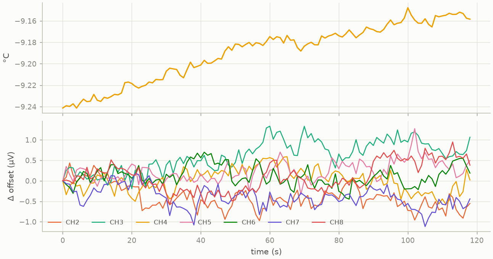
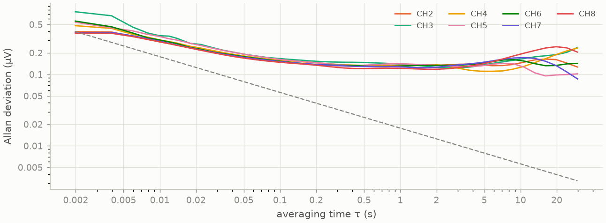
Offset drift and Allan deviation
| Ch | Offset start (µV) | Offset end (µV) | Change (µV) | Drift (µV/°C) | Min Allan dev. (µV) | at τ (s) | Verdict |
|---|---|---|---|---|---|---|---|
| 2 | -114 | -115 | -0.553 | — | 0.127 | 29.8 | i INFO |
| 3 | -263 | -262 | 1.06 | — | 0.123 | 2.56 | i INFO |
| 4 | 21.2 | 21.2 | 0.0217 | — | 0.11 | 5.8 | i INFO |
| 5 | -14.7 | -14.2 | 0.495 | — | 0.0952 | 16.1 | i INFO |
| 6 | 169 | 170 | 0.188 | — | 0.129 | 0.749 | i INFO |
| 7 | -112 | -113 | -0.442 | — | 0.0864 | 29.8 | i INFO |
| 8 | -372 | -371 | 0.383 | — | 0.118 | 1.7 | i INFO |
Drift is fitted only when the temperature changes by at least min_temp_span_C. Allan deviation: slope −½ = white noise (averaging helps), flat = flicker, rising = drift. Its minimum is the longest useful averaging time. Compare drift with the datasheet 'Offset drift'.
Run details
| Run | 2026-11-16_221949 |
|---|---|
| Source | hardware on /dev/cu.usbserial-1140 |
| Captures | 114 |
| Device ID | 0x92 |
| Firmware | clamshell-suite-1.0 |
| Rates | 500, 2000, 4000 |
| Channels | 1, 2, 3, 4, 5, 6, 7, 8 |
| Channel plan | each, all |
| Capture length (s) | 10 |
| Mains (Hz) | 50 |
| Experiments | P, A, B, C, D, E, F, G, H, I |
| Registers after run | 92 86 01 C0 00 14 01 01 01 01 01 01 01 00 00 00 00 00 00 00 0F 00 00 00 00 00 |